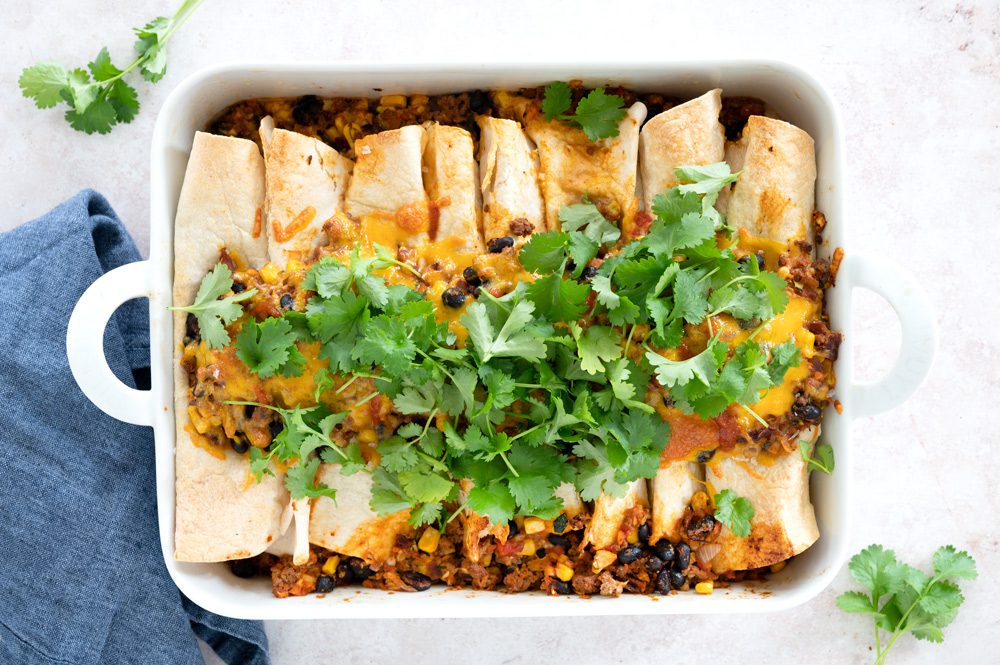

It is always satisfing and delicious when enchiladas meet your mouth!
This recipe is filled with vegetables, meat and overall great taste.
Easy, tasty and fast to make.
- Cook time: 40 min
- Active time: 25 min
- Servings: 4-6
Ingredients:
- 1 onion, minced
- 500 g ground beef
- 2 carrots, grated
- 200 g squash, grated
- 1 red bell pepper, chopped
- 2 cloves of garlic, pressed
- 2 tsp ground cumin
- 1 tsp ground oregano
- 0,5 tsp cinnamon
- 1 tsp smoked paprika
- 1 can of chopped tomatoes
- 1 can of beans
- 150 g corn, frozen
- 8 tortilla pancakes
- 150 g cheddar
- 1 tbsp olive oil
Directions:
- Saute onion in a pot with oil.
- Add ground beef and cook in high temperature while stirring it.
- Add carrots, squash, bell peppers, garlic, spices and tomatoes.
- Stir and cook for 5 minutes.
- Add beans and corn and cook for another 5 minutes.
- Pour the meat sauce into the wraps. Roll them up together and lay down in ovenproof dish.
- Sprinkle cheddar cheese over all of enchiladas.
- Lastly sprinkle oregano onto cheese.
Bake it for 15 minutes at 175 °C. BON APPETITE!
Back to homepage